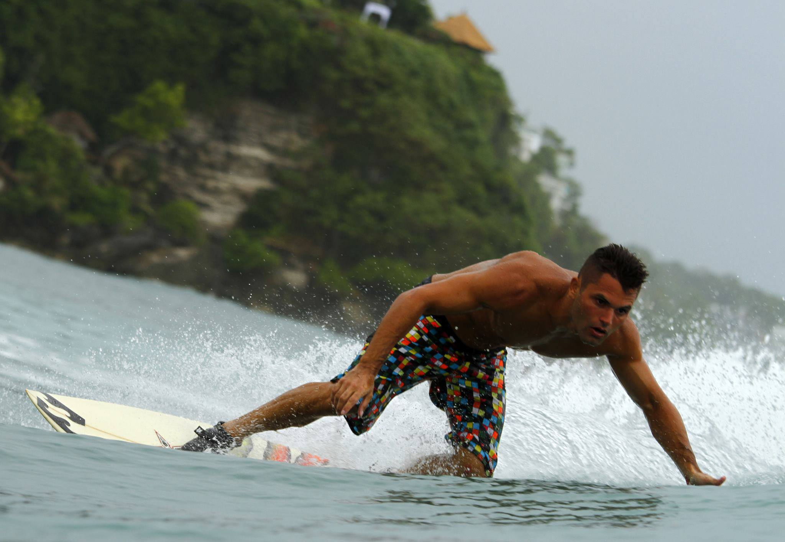
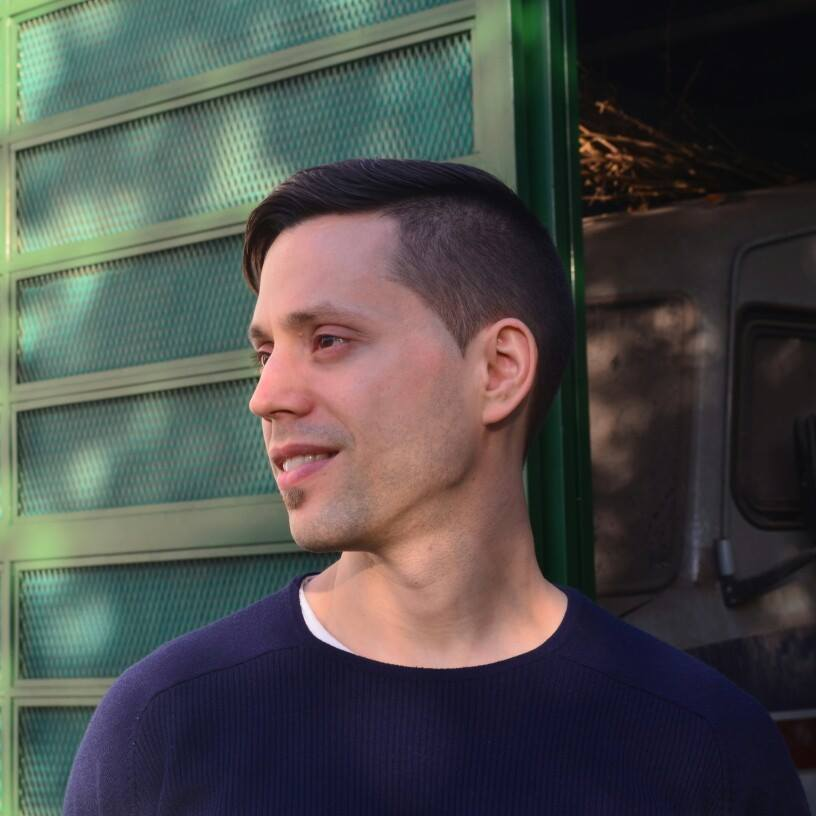
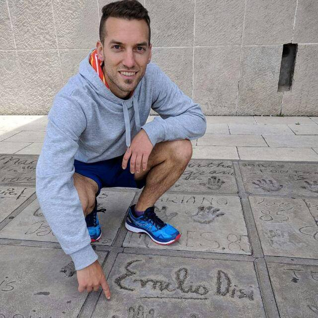
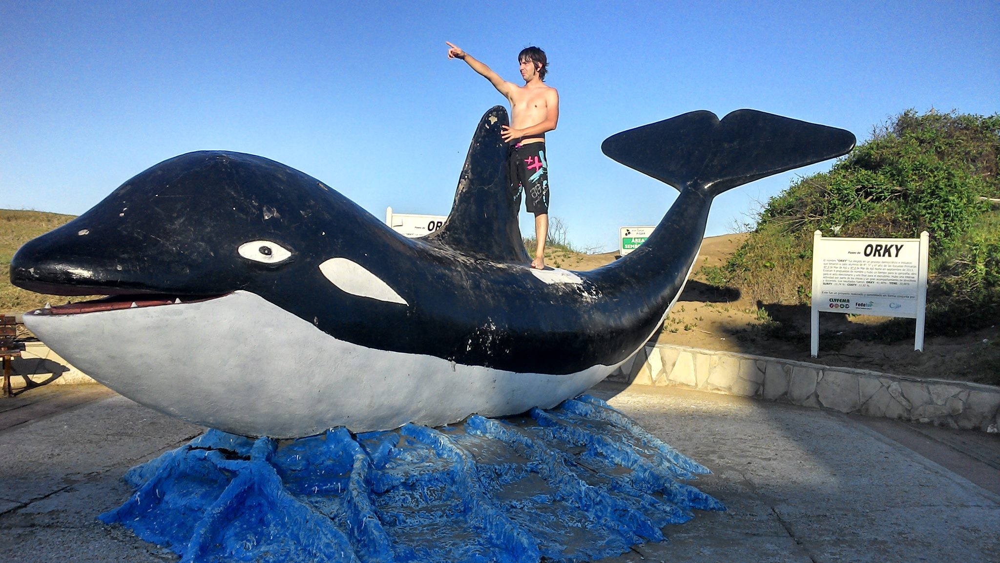
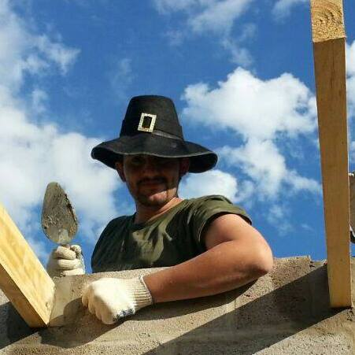
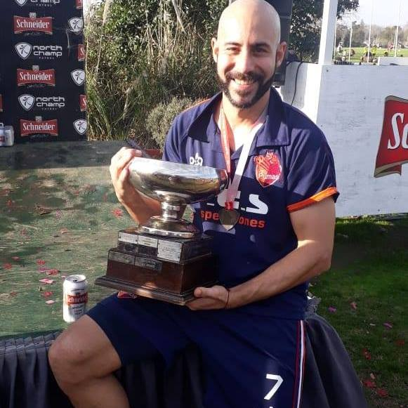
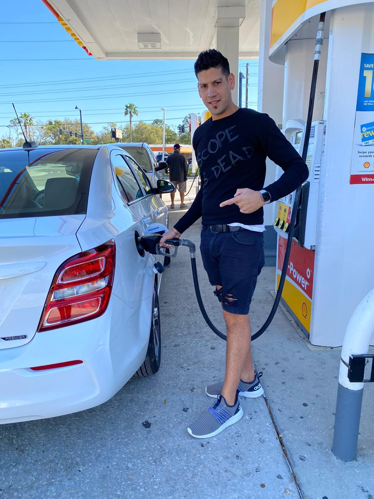
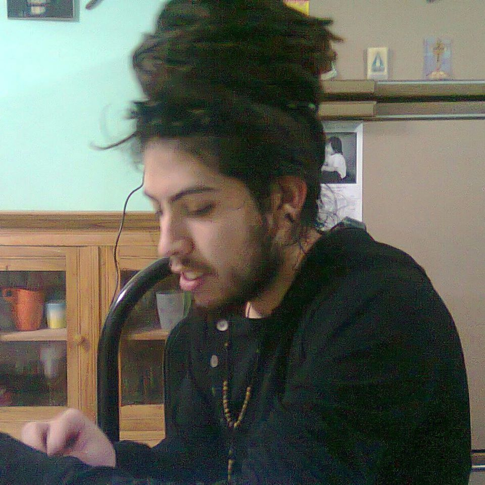
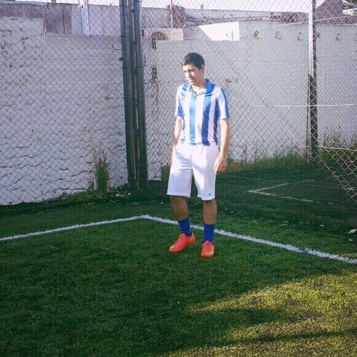

Jugador aguerrido, rapido y eficaz. Te descuidas y estas muerto. Tiene problemas de lag pero juga en una mac.
Atento a la jugada, se toma su tiempo para el disparo. Jugador con mucho potencial pero baja disponibilidad para jugar.
Compra y te mete bala, de una, a veces no le sale. Jugador versatil y arriesgado, no tiene muy buena vision del juego. Gran hosteardor todo estan muy contentos por su diversidad en carga de mapas.
gran jugador, calenton y un poco excedido de peso. Es mas facil detectarlo en el mapa por su zapan, blanco facil por razones obvias. Especialidad acuchillarte por la espalda.

Gran vicioso del juego. Nunca le perdio la mano y volvio facilmente al nivel de carreto. Tiene cara de chimpace pero igual con esa jeta te peina para adentro. Su jefa no lo deja jugar mucho.

Jugador de las grandes esferas. Habilidoso con su pistola. Arma dupla letal con Damian, juntos son la pesadilla del cuco.
Ave rapaz nocturna. Siempre juega con el mate al lado. Se desconocen debilidades y habilidades del jugador.
Experto jugador en la compra y venta de armas. Gran lanzador de bombas. Campeador por excelencia. Le gustan las armas con mira, como juegan las nenas! Mejora la punteria a medida que va destapando cervezas.

Rookie pero con proyeccion y gran habilidad en el juego. Su naso le juega una mala pasada. Le gusta parar las balas con la napia. Sale del laburo y esta dispuesto a viciar siempre.
Jugador destacado en el uso de armas de asalto. Su pantalla favorita es iceworld. En medio de las partidas se tira al piso para verlas mejor. Cabecea facil. Nunca juega sin un federico alvear al lado.
No lo dejan jugar.
Tiene miedo a jugar.
